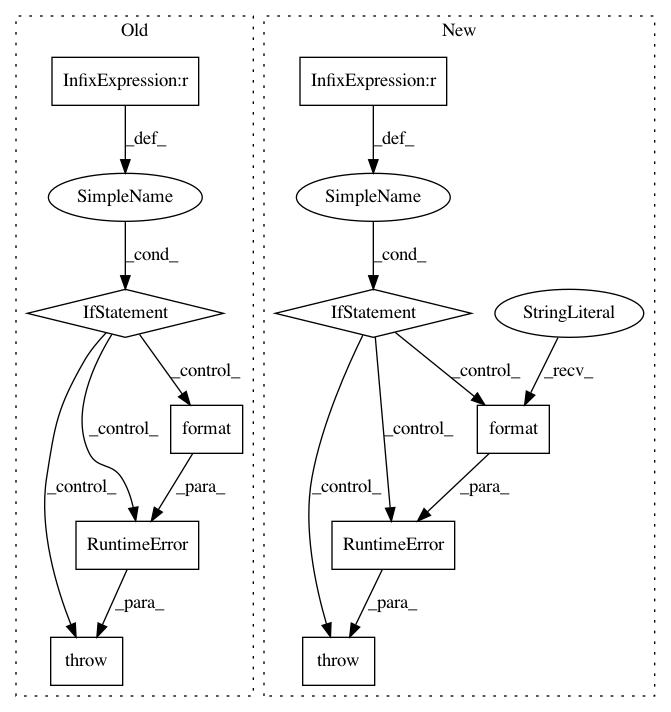

990d954031a1121bc0b9ec1678c0b7db7cfaa374,tpot/operators/base.py,Operator,parameter_types,#Operator#,117
Before Change
annotation = operator_parameters[param].annotation
// Raise RuntimeError if a type is not annotated
if annotation == Signature.empty:
raise RuntimeError("Undocumented argument type for {} in operator {}".
format(param, self.sklearn_class.__class__.__name__))
else:
arg_types.append(annotation)
return_type = Output_DF if self.root else pd.DataFrame
return (arg_types, return_type)
After Change
num_args = len(getargspec(self.preprocess_args).args[1:]) // Remove "self"
// Make sure the class has been written properly
if num_args != len(self.arg_types):
raise RuntimeError(("{}"s arg_types does not correspond to the "
"arguments defined for itself".format(self.__name__)))
// First argument is always a DataFrame
arg_types = [pd.DataFrame] + list(self.arg_types)
return_type = Output_DF if self.root else pd.DataFrame
return (arg_types, return_type)
In pattern: SUPERPATTERN
Frequency: 3
Non-data size: 10
Instances
Project Name: EpistasisLab/tpot
Commit Name: 990d954031a1121bc0b9ec1678c0b7db7cfaa374
Time: 2016-07-08
Author: supacoofoo@gmail.com
File Name: tpot/operators/base.py
Class Name: Operator
Method Name: parameter_types
Project Name: cornellius-gp/gpytorch
Commit Name: 4888270b264f9266a5097f620476565b17ef9f81
Time: 2019-03-11
Author: neighthan.hunt@gmail.com
File Name: gpytorch/models/exact_gp.py
Class Name: ExactGP
Method Name: set_train_data
Project Name: cornellius-gp/gpytorch
Commit Name: 979b8c9efa551e8c948a4aca145367a2d87ac8d6
Time: 2019-02-26
Author: balandat@fb.com
File Name: gpytorch/distributions/multitask_multivariate_normal.py
Class Name: MultitaskMultivariateNormal
Method Name: rsample